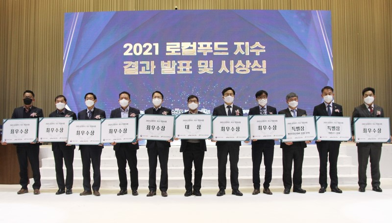

농림축산식품부(장관 김현수)와 한국농수산식품유통공사(사장 김춘진), (재)소비자시민모임(대표 백대용)은 지난 14일 대전 ICC호텔에서 ‘2021 로컬푸드 지수 결과발표 및 시상식’을 개최했다.
로컬푸드 지수는 지역 중심의 먹거리 선순환 체계에 대한 국민적 관심과 지자체의 추진 의지를 높이기 위해 2019년에 개발되었다. 지난해 시범 측정을 거쳐 올해 전국 159개 시·군을 평가한 결과, 전북 완주군 등 11개 지자체가 우수 지자체로 선발되었다.
시상식에서는 S등급을 받은 전북 완주군이 대상인 농림축산식품부 장관상을 수상했다. A등급을 획득한 강원 춘천, 경기 화성, 전남 나주·장성, 전북 군산·전주, 충남 청양·아산, 충북 옥천군(가나다순) 등 9개 지자체는 최우수상인 공사 사장상을 받았다.
또한, 지표 부문별 우수성과 및 전년 대비 성장을 보여준 경기 화성, 경남 거창, 전북 완주·전주는 특별상을 수상했다.
전북 완주군은 생산자-소비자 소통 노력, 취약농업인 확대 분야 등 지표 전반에서 우수한 성적을 받아 2년 연속 S등급을 달성했다. 경기 화성시는 안전성 관리 분야에서, 경남 거창군은 먹거리 거버넌스 운영 분야에서 두각을 나타냈으며, 전북 전주시는 전년대비 가장 높은 점수 상승 폭을 보여줬다.
한편, 로컬푸드 지수는 지역별 로컬푸드 확산 정도와 로컬푸드 활성화를 위한 지자체의 노력을 측정하는 지표로, 올해는 ▲다품목 생산체계 지원현황 ▲사회적경제조직 로컬푸드 참여도 ▲먹거리 거버넌스 운영현황 등 총 17개 지표에 대해 측정했다.
오정규 유통이사는 시상식에서 “더 나은 먹거리 정책을 만들기 위해 지역 먹거리 선순환 체계에 대한 국민적 관심 확대가 중요하다”며, “로컬푸드 지수 측정을 통해 정책을 재점검하고, 지역 간 격차를 점진적으로 해소할 수 있도록 노력하겠다”고 말했다.